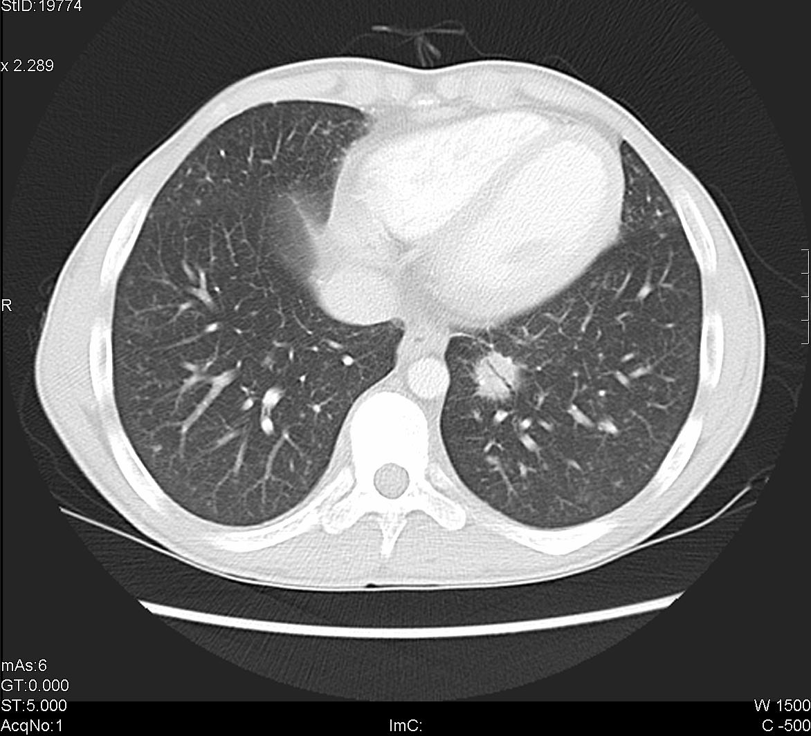

- Craneo
-

Se podrá visualizar tanto el parénquima cerebral como los huesos del cráneo a fin de buscar tanto patologías crónicas como traumáticas. -
Estudio en el que se focaliza el estudio de las estrucuras de ambos oidos visualizando las 3 secciones de los mismos: externo, medio y interno. -
Se focaliza en la posibilidad de estudiar tanto los nervios opticos como las cavidades orbitarias, su contenido y la estructuras oseas que la conforman -
Este estudio ayuda a observar patologias de las cavidades neumaticas del proceso facial, en caso de situacion traumatica se incluye tambien el maxilar inferior para descartar fracturas o luxaciones. -
Estudio realizado con contraste endovenoso mediante el cual se visualza la vascularizacion del craneo a fin de descartar o visualizar lesiones vasculares o deficit de irrigacion. -
Mediante el escaneo del cuerpo completo se estudia la integridad de todos los huesos del cuerpo.
- Cuello
-
Estudio, preferentemente realizado con contrste endovenoso, para visualizar las numerosas estructuras que son parte del cuello, musculares, vasculares, organicas, etc.
-
Mediante una reconstruccion especial se puede visualizar la permeabilidad de la via aerea o la falta de esta mediante obstucciones.
-
Principalmente especializado en la porcion osea de la columna se buscan lesiones de este tipo traumaticas o cronicas.
-
Pensado para poder estudiar los vasos del cuello pudiendo diferenciarlos, a traves del contraste, del resto de las numerosas estructuras del cuello.
- Torax
-
Gold standard para las patologias respiratorias, permite ver los pulmones en alta resolucion, tambien permite estudias las estructuras del mediastino.
-
Visualizacion de las estructuras oseas del torax.
-
Permite descartar o confirmar de manera rapida y eficiente, mediante el contraste endovenoso, esta patologia grave
-
Utilizado para el estudio del vaso mas importante de la anatomia y su integridad
-
Principalmente especializado en la porcion osea de la columna se buscan lesiones de este tipo traumaticas o cronicas.
- Abdomen y Pelvis
-
Preferentemente realziado con doble contraste, se pueden visualizar las estructuras del Abdomen y estudiarlas en profundidad
-
Preferentemente realziado con doble contraste, se pueden visualizar las estructuras de la Pelvis y estudiarlas en profundidad
-
Se estudian las estructuras del arbol urinario descartando litiasis y otras patologias cronicas.
-
Mediante la dilatacion del intestino con manitol se visualiza la integridad del mismo
-
Principalmente especializado en la porcion osea de la columna se buscan lesiones de este tipo traumaticas o cronicas.